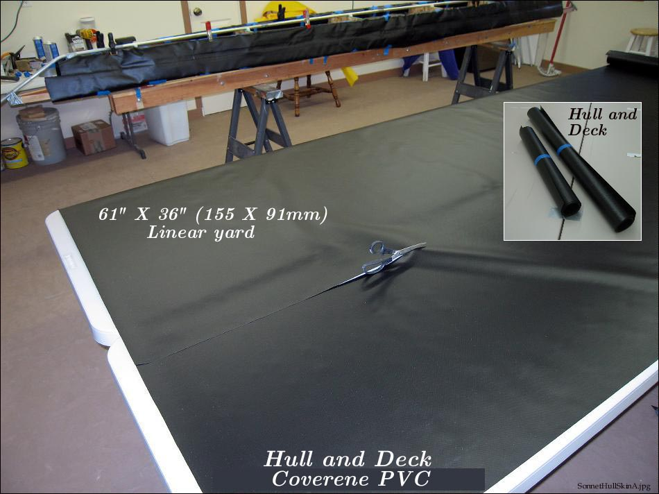

| Sonnet ( Hull Skin) | Menu Last Page Next Page |
|

Coverene 10oz PVC is recommended for the sponson sleeves, deck, and coaming. Coverene 18oz is recommended for the hull. For the hull skin, measure the distance around the skinning frame from one gunwale top to the other around the hull bottom at section 3. Add 2" ( 51mm ) per side and use this as your measurement for cutting the PVC.
Sonnet 16... If using 18oz of one color for hull and deck , 6 linear yds ( 61" X 36"yd.) will cover both. For sponson sleeves , 5 linear yds of 10oz is required. If covering the deck and coaming with 10oz (recommended), an additional 6 yards of 10oz will be required. Vinyl Cement... 2 quarts / litre's are required
Sonnet 18... If using 18oz of one color for hull and deck , 7 linear yds ( 61" X 36"yd.) will cover both. For sponson sleeves , 6 linear yds of 10oz is required. If covering the deck and coaming with 10oz (recommended), an additional 7 yards of 10oz will be required. Cement... 2 quarts / litre's are required |
|